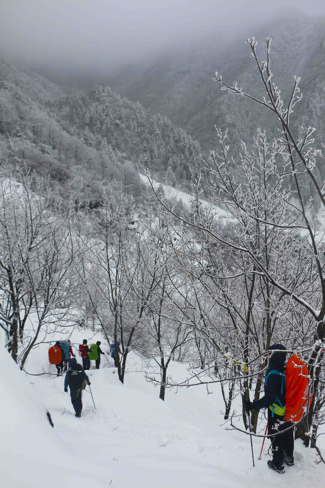

[转寄/推荐][转贴][删除][修改][设置可RE属性][上一篇][返回讨论区][下一篇][回文章][同主题列表][同主题阅读][从这里展开]
发信人: zhangxu(张旭), 信区: outdoor 标 题: 2018雪海三尖——zx 发信站: 饮水思源 (2018年12月21日02:01:09 星期五) 又是一年的干事破冰，转眼间一年就过去了……熟悉的押队，熟悉的老人，但许多事 情却有所不同。 依稀记得去年这个时候，我只是参加了冬训几次训练而已，匆忙间被推举为组长，诚 惶诚恐。第一次收到队员告知单，第一次签“生死状”，第一次找爸妈发家长知情短信… 出线是个啥玩意啊~ 这次的我，面对出线的例行公事，竟有些麻木。出线为了什么？我只感觉每次我都没 想清。记得老铁说过“当年出了三尖，就决定为协会卖命了。”凭着这句话，我报了三尖 ，也希望看一看、带一带新人，毕竟也算是老人了。 这次三尖D0住的地方是和清凉峰一样的老乡家，一眼认出了向导。熟悉的小屋，顿生 亲切之感。不过门庭积雪，不知山上风景变化几何，到底多大的雪呢，这个疑问从出现前 几天开始一直萦绕在我的心头。 上山后，果然不虚此行，三尖的雪，是我这辈子经历最大的雪了。一路在云雾中前进 ，身旁的树枝结了厚厚的冰盔，打在身上，重而不疼。没有云海，却有雪海，不虚此行。 早晨解决了如厕难题后，如释重负。只是用雪掩埋了粪便，感觉还是不好。总把leav e no trace讲在口边，但实际又没做到，真是羞愧啊！下次一定带铲子！ D1晚被小怪兽组的菜刺激得不行，果然没有对比就没有伤害。又来到旁边的zyf组，印 象中偌大的床板上就摆了一包挂面，忍不住笑了出来，zyf说了一句：“你还不知道跟我一 组吃的怎么样嘛~”加餐的烤鸡没人喜欢吃，大部分只好被“张氏屠宰场”处理了（味道不 错，香）。感觉下次还是烤肠，烤串啥的会好一点，烤鸡难度太大了。 回帐篷睡觉，帐篷上的积雪让人仿佛来到雪山~希望有机会也能真的去爬雪山~ D2早上起来太拖沓了，我们组预定出发时间前15分钟还在煮燕麦，最后拔营时竟发现 有气罐和头灯无人认领……加上这次垃圾无须我们自己带下山，可能之后这批新人的垃圾 处理意识会不够，需要多加提醒。 下山过程中，随着时间的推移，路也变得奇滑无比，毕竟从第二条线开始就没摔过的 xxr也摔了还几次呢~另，在此书面检讨我嘲讽zyx摔倒的行为，善恶终有报。当然，如果不 想摔，也可以试着滑雪~ 总体来说，两天下来问题不大，但整体感觉新人还是太拖沓，不论是行走还是到建、 拆营的过程，看来新人的技术和体能都需要提升。可能也是老人没教到位吧…… 话说到现在bbs还没有几篇总结，感觉明年bbs要凉？ 1、下山过程中拍照，镜头总是起雾结霜，带来了不小的烦恼。下次大概还是需要涂一 些防起雾的试剂，涂肥皂的话，貌似理论上也行，但总感觉伤镜头。 2、背着单反下山确实难受，想要舒适，一要调节背带长度，尽可能短防止相机晃动， 二要持单杖，方便拍照。最好的解决方案还是GoPro或者微单，轻才是王道啊。不过以后想 试试三脚架+单反去拍星空。 3、雪地下坡先用脚后跟踢冰会稳一些。买个简易冰爪应该会很舒服。 4、手套最好是防水的，否则湿了很难受，当然最好也是透气的……那估计挺贵的了 5、雪套还是有用，第二天借出去后高帮鞋还是进了一些雪，第一天则一点没进 6、雪套我是周四下午买的，上海发顺丰，周五上午就能到 7、大冷天的行走过程中几乎不怎么喝水，两天加起来也就喝了不到10口水吧。我收回 庙门说的要喝2.5L水这种狂言…… 8、时间观念还是要强调！ 9、雪地一定要沿前面队友的脚印走。有次我想拍照就偏了队伍路线大约1m左右，刚踏 过去，旁边就碎了一个2m*2m的大窟窿，磊叔和我说可能是猎户布的陷阱，后怕…… 10、搭帐篷时外账和帐杆的连接不要用平结，打的是真的紧……第二天不得不解了手 套才解开，寒风中差点冻伤。估计蝴蝶结会好很多。 11、下次争取有效处理山上排泄的粪便！  screen.width - 200){this.width = screen.width - 200}"> |
[转寄/推荐][转贴][删除][修改][设置可RE属性][上一篇][返回讨论区][下一篇][回文章][同主题列表][同主题阅读][从这里展开]